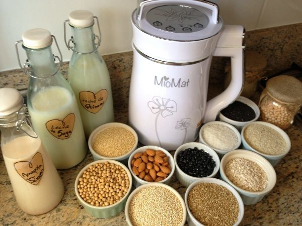

Nota de Tapa
Leches vegetales
¿Un desayuno sin leche de vaca? No sólo es posible sino que las opciones son riquísimas. Veamos algunas alternativas vegetarianas a la leche:

La de soja es la que vemos con más frecuencia en las estanterías de los comercios, pero existe una gran variedad –incluso más saludables y ricas- que se pueden preparar con técnicas simples en casa.
VENTAJA: La leche de vaca puede producir intolerancia alimentaria (lactosa) o alergias (caseína) en personas susceptibles. Además, son mucho más fáciles de digerir.
OJO: No todas las bebidas vegetales tienen los mismos nutrientes. Por eso hay que aprender a elegir la mejor opción para cada uno.
Variedades: Pueden ser a base de legumbres (soja), de cereales (arroz, avena, trigo, lino) y de frutos o frutos secos (coco, almendras, avellanas).
- 1. A base de cereales y legumbres: Tienen un elevado contenido en fibra, vitaminas y minerales, y no contienen colesterol ni lactosa. Por ejemplo la leche de avena contiene vitamina E, ácido fólico, oligoelementos y minerales los cuales ayudan a prevenir y combatir el cáncer y las enfermedades coronarias.
- 2. A base de frutos: Son muy nutritivas y completas por ser una fuente de ácidos grasos de calidad y calcio.
Conservación: Para conservarlas más tiempo frescas se recomienda guardarlas en la heladera tapadas. Pero OJO! Las leches caseras como no tienen ningún proceso químico sólo se pueden conservar -en la heladera- hasta 48 hs…
TIP: Las leches vegetales se sedimentan luego de preparadas, se sugiere siempre revolver la preparación antes de servir, de esta manera se conservará y se aprovechará mejor el contenido.
Para preparaciones: Para tortas y postres que suelen llevar leche es recomendable usar la leche de Avena o de frutos secos como Almendras o Nueces. Sobre todo la de avena tiene una buena consistencia para cremas y postres en general y no altera en gran medida el sabor. En cambio, ojo con la preparaciones saladas, si las leches son compradas –en lugar de fabricadas por nosotros mismos- suelen ser endulzadas (incluso las que dicen Sin Azúcar) y puede que la mayonesa vegana salga dulce!!!!
Leche de Soja
Se produce a partir de las semillas de soja con agua.
Propiedades: Son muy parecidas a la de vaca. Aunque poseen poco Calcio, las comerciales están enriquecidas. Es rica en proteínas, no contiene grasas saturadas, es baja en calorías; tiene vitamina A, hierro, folatos, vitamina B12, lecitina, potasio y magnesio y es muy buena para el corazón…
Desventajas: Hay quienes no recomiendan su ingestión en grandes porciones. Dicen que pueden inhibir la absorción de minerales y proteínas, y recomiendan que embarazadas y niños de 5 años consulten con sus médicos nutricionistas.
Leche de Arroz
Se hace con arroz integral y agua, y contiene las mismas calorías que la leche semidescremada de vaca… aunque muchas menos proteínas.
Propiedades: Es baja en grasas, no tiene grasas saturadas, es rica en fósforo, no aumenta el colesterol y es de fácil digestión.
Desventajas: Es alta en calorías y baja proteínas. Posee muchos carbohidratos.
OJO: Tiene un alto contenido de azúcar por lo que deben prestar atención los diabéticos.
Leche de Almendras
Su preparación es a base de almendras molidas y agua. Y aunque las almendras son ricas en calcio, no lo es la leche de almendras.
Propiedades: Es rica en vitaminas y minerales, contiene riboflavina, vitamina B12, D y E, ácido oleico y zinc.
Desventajas: Tiene bajo contenido proteico.
Leche de Coco
Se prepara con la pulpa del coco, no con su agua.
Propiedades: Tiene grasas fáciles de digerir y es baja en colesterol.
Desventajas: Es muy baja en calcio, alta en calorías, baja en proteínas y alta en grasas saturadas.
RECETA: Leche de Almendras
A modo de ejemplo les dejamos la receta para hacer bebida de almendras. También funciona igual con nueces!
Ingredientes para 1 litro:
• Un puñado de Almendras. Si se desea más espesa agregar frutos, de lo contrario disminuirlos.
• 1 litro de Agua
Para que quede más sabroso: 1 cucharada sopera de Aceite de Oliva, 4 cucharadas de Azúcar o sus reemplazos, y 1/2 cucharadita de Vainilla.
Preparación:
• Ponerlas en remojo por unas 8 horas para activar sus propiedades.
• Pelar las almendras (se las puede pasar por agua hirviendo para que sea más fácil) y colocarlas en la licuadora.
• Agregar el agua, y si se desea el aceite, el endulzante y la vainilla. Licuarlo bien hasta que queden bien desechas.
• Colarlo en un colador fino para que no queden residuos.
IMPORTANTE: Casi todas las bebidas naturales envasadas poseen agregado de calcio para hacerlas un alimento más rico y nutritivo. De cualquier manera, estas bebidas no son reemplazo de la leche de vaca –salvo que seas vegano o alérgico a la lactosa- sino bebidas que aportan más o menos distintas propiedades: ninguna contiene los mismos minerales ni vitaminas que la leche animal.